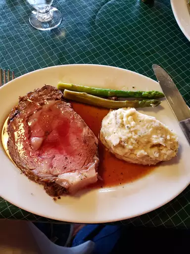

Home made lasagna

Description
Homemade lasagna isn't as hard to make as it seems. Don't be intimidated by all the layers of delicious Italian flavor — try this homemade lasagna recipe today!
Ingredients
- Meat
- Onion
- Canned tomatoes
- Fresh herbs
- Sugar
- Spices and seasonings
- Lasagna pasta
- Cheese
Steps
- Cook the meat: Cook the ground meat in a skillet until browned and crumbly. Add the onion and continue cooking until it's translucent. Stir in the canned tomato products, half of the parsley, garlic, basil, 1.5 teaspoons of salt, oregano, and sugar.
- Cook the pasta: Boil the lasagna sheets in lightly salted water until they're al dente.
- Make the cheese layer: Mix cottage cheese, Parmesan cheese, eggs, the remaining parsley, the remaining salt, and pepper in a bowl.
- Assemble the lasagna: Layer the ingredients according to the recipe (starting with sauce and ending with mozzarella) until the lasagna is assembled.
- Bake the lasagna: Cover with foil and bake in the preheated oven for about half an hour. Remove the foil and continue baking until the top is golden brown.